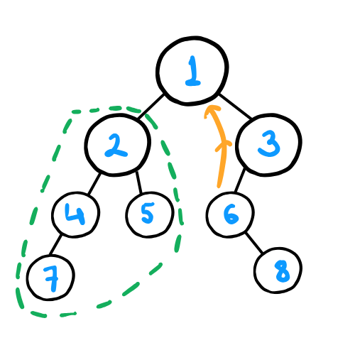
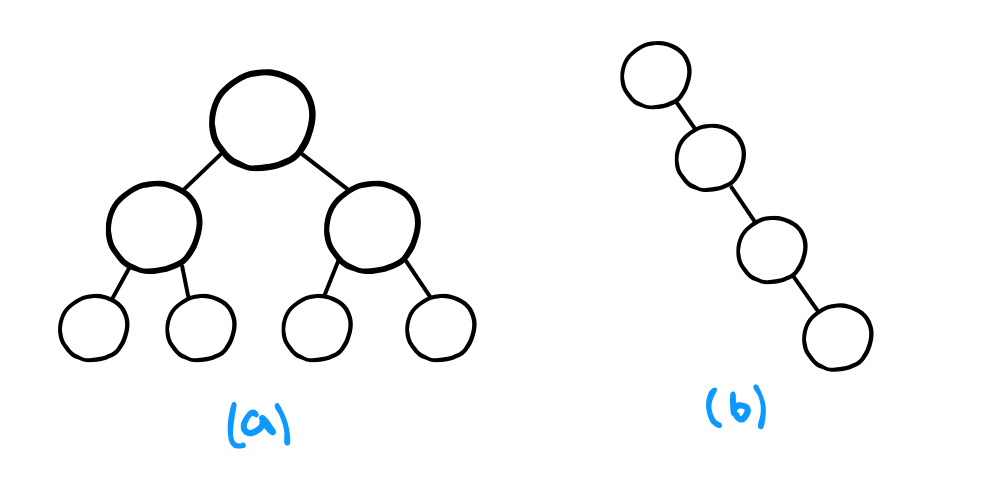
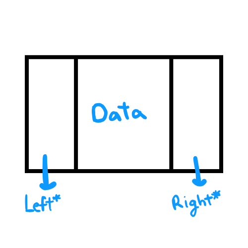

A binary tree is a hierarchical data structure where each node has at most two children, referred to as the left child and the right child. The topmost node in the tree is called the root, and nodes without children are called leaves.

Binary Tree Graphical Representation
The image above illustrates a binary tree with the following characteristics:
Root node: The tree begins at Node 1, which is the root node.
Node 2 is the left child of Node 1.
Node 3 is the right child of Node 1.
The subtree enclosed within the green dashed line is rooted at Node 2.
The ancestors of Node 6 are Node 3 and Node 1. Denoted by the orange line
Here are some common terms associated with binary trees:
Leaf Nodes: These are nodes that have no children and are not the root node. In this example, Nodes 7, 5, and 8 are leaf nodes.
Degenerate (Pathological) Binary Tree: A tree where each parent node has only one child, effectively forming a structure similar to a linked list. This is illustrated in Figure B of the image below.
Perfect Binary Tree: A binary tree in which all internal nodes have exactly two children and all leaf nodes are at the same level. This is shown in Figure A of the image below.

Representation of binary Tree:

struct Node {
//data
Node* left;
Node* right;
};
The right and left pointers refer to a node's children and are set to NULL if the corresponding child does not exist.
Each node also stores some data (typically using a data field).
For trees that are not binary and can have multiple children, an array of pointers is used to keep track of the children, for example: Node* children[N];